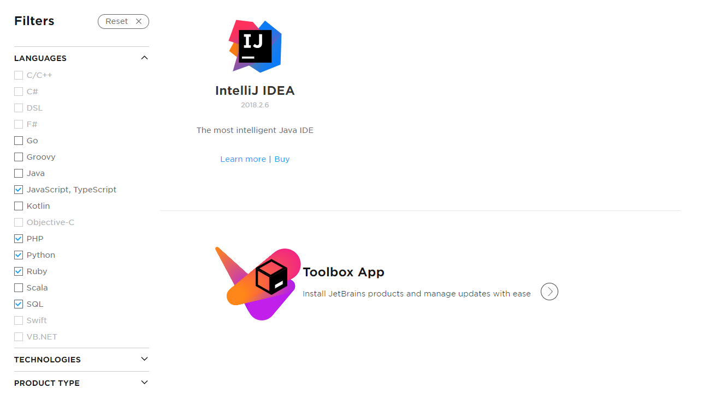

Best IDE for Web Development 2019
So I’ve been researching lately about code editors and IDE’s and didn’t find a lot. It seems like people just download what every their discord friends told them to. Or whatever is popular at the time. *cough visual studio code. So in this video I’m going to explain to you what is the best IDE/Code editor for Web Development.
To start off, lets go for the Front-end code editor Atom. Now it know what your thinking. Atom is the best because I use it. And I will have to say that it is a little bias. But I’m a Front-end Developer. And this works perfectly for me. Atom is a code editor that was first initial released June 25th 2015. Atom was owned by Github. Then Microsoft bought Github. But the cool thing about Atom is that you can go and tweak the code and UI to match your preferences. Not only that, but they added a new feature called “teletype”, where two people can share a link and code on the same document. Kinda like two people on a Google Doc. But lastly. We can not forget about all the themes, that's a yes, you can make your own themes. Atom is a very customizable code editor and supports lots of languages. Has tons of themes, and has cool add-ons that can increase productivity.
Before I get to the Full stack editor, let me give an Honorable mention to Codepen.io If your doing Front-end and your a beginner. You can use something called Codepen.io *not sponsored. Codepen.io is an online code editor. Where you can post and share pens. It has three panels. One for HTML, one for CSS, and one for JavaScript.Codepen also allows you to view other projects, people have made and save them.If your just starting and you want to test certain things your learning. Codepen.io is the best, and most accessible place to do so.
Now let’s say that your a Full Stack developer and you need a mixture of both. Visual Studio Code is probably the best it’s going to get. Now visual studio code has a lot of features that both sides use. Visual Studio Code is an IDE so It has built in debuggers and build automation tools. Also another this is Visual studio is owned by microsoft. I’m not sure of all your opinions, but I thought I might just through it out there. Visual Studio code what released April 29th 2015 and Is still a functional editor today.It’s Open source and owned by Microsoft… (*Awkward silence). Has great reviews and has Git built into it. It’s not a bad editor, and I can see why so much people like it for more than the multiple dark themes. It’s definitely for the more intermediate programmers. Visual Studio has all the components for front-end and back-end because it’s an IDE. And for that reason, is why it’s the best for Full-Stack Development.
For Back-end I decided to choose Jetbrains. Jetbrains has many tools an IDE’s that you can use for different languages. On their website is lets you sort through what languages you want or use for an IDE. But, I’m not a back-end dev, so go check them out for yourselves.
Original Video on my YouTube